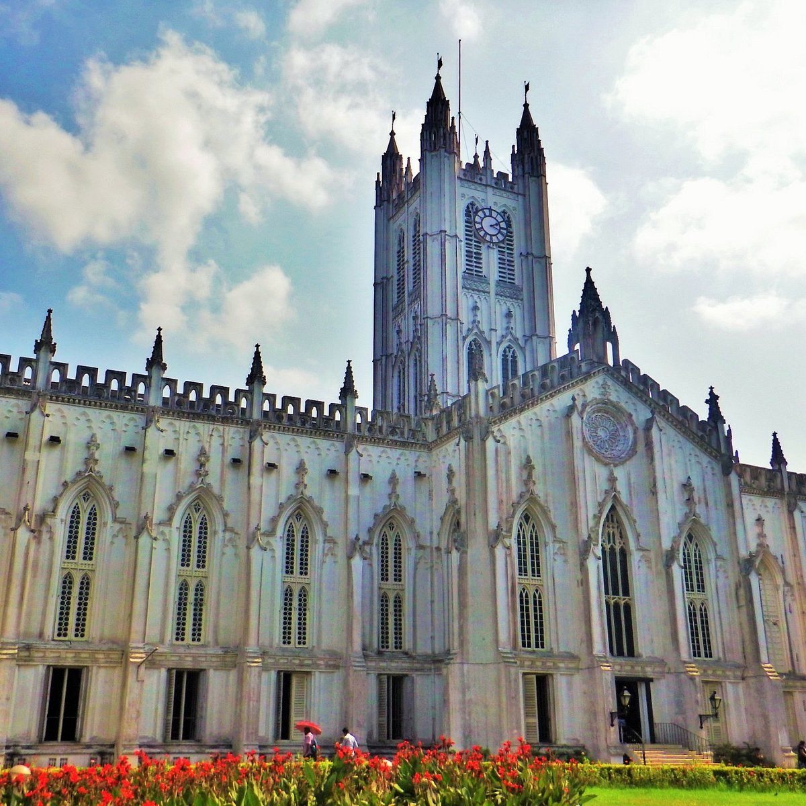
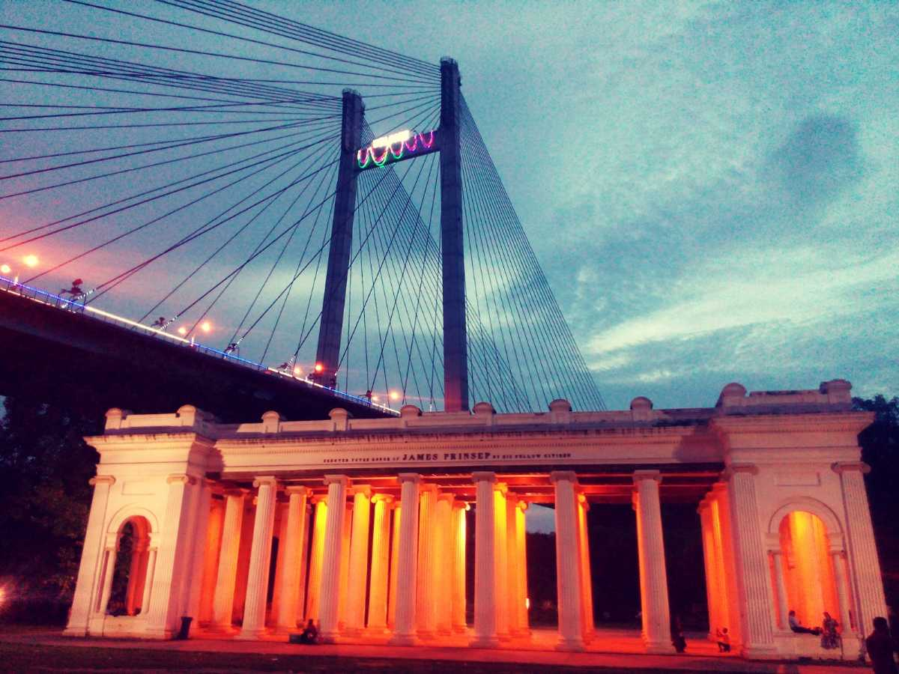

~ Places to Visit in Kolkata ~
Popular things to do

Cultural Tours

Shopping Tours

Churches & Cathedrals

Architectural Buildings
Top Attractions Kolkata

Victoria Memorial Hall
Representing the resplendent and majestic British architecture, Victoria
Memorial Hall stands today, as a veritable icon of the city of Kolkata.
Located on 1 Queen's way, the VMH was envisaged by Lord Curzon, the
Viceroy of British India, as a memorial to the deceased Queen Victoria.
Mother House
The Mother House is the erstwhile residence of probably the most
renowned and inspirational female figures in Indian History—Mother
Teresa. If you are searching for something more meaningful, more awe
inspiring, do not forget to visit this landmark.
Dakshineswar Kali Temple
The temple is known for its association with Ramakrishna and
Ma Sarada Devi, mystics of 19th century Bengal. The Temple complex
on the bank of river Hooghly, West Bengal. The main temple was
inspired by Navaratna style Radhakanta temple, built by Babu
Ramnath Mondal of Tollygunge.
Park Street
Park Street, officially known as Mother Teresa Sarani, is a famous
thoroughfare in downtown Kolkata (formerly Calcutta), India. The
street runs through what was a deer park of Sir Elijah Impey, Chief
Justice of the Supreme Court in Calcutta from 1773 to 1789, hence
the earlier name.

EHowrah Bridge
It carries a daily traffic of approximately 100,000 vehicles and
possibly more than 150,000 pedestrians, easily making it the busiest
cantilever bridge in the world. The third-longest cantilever bridge
at the time of its construction, the Howrah Bridge is currently
the sixth-longest bridge of its type in the world.
Eco-Tourism Park in Kolkata is an expansive urban park
designed to promote eco-tourism in the city. It is the
biggest urban park in India and occupies over 475 acres
of land. The beauty of the location increases ten folds
because of a water body that surrounds the park and forms
an island in the middle.

Eden Gardens
Eden Gardens is called the "Mecca of Indian cricket", due
to it being the first officially built ground for the game
of cricket in India. Eden Gardens has hosted matches in major
international competitions including the World Cup, World
Twenty20 and Asia Cup.

Science City
Developed by the National Council of Science Museums, it
is one of the largest and finest in the world, presenting
science and technology in a stimulating and engaging environment
that is truly educational and enjoyable for the people of all ages.
College Street (Boi Para)
The College Street is famous for its small and big book
stores, which gives it the nickname Boi Para (Colony of Books).
People from the whole city and different parts of the state
flock the innumerable book stores along the side-walk for books.
Quest Mall
The mall has the largest apparel store in the city,
Lifestyle, with a total area of 100,000 sq ft (9,300 m2).
It also houses a six-screen Insignia class multiplex INOX
cinema, Spencer's Hyper Market and Starmark bookstore in the
basement. The mall has stores of various luxury brands like
Gucci and Emporio Armani.

Prinsep Ghat
Prinsep Ghat is one of the oldest recreational spots of
Kolkata. People visit it in the evenings on weekends to
go boating on the river, stroll along the bank and
purchase food from stalls there.
New Market
There are several renowned confectioners in New Market:
Nahoum & Sons (estd. 1902) is truly historic, with its
original mahogany cabinetry and marble counters.